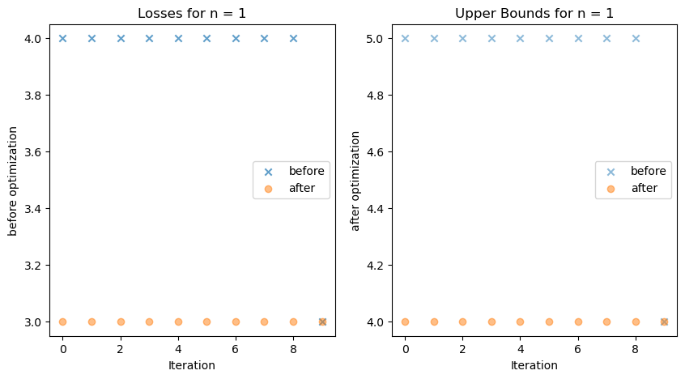
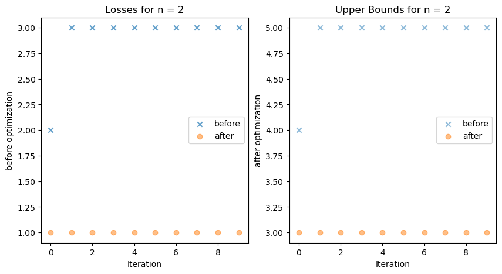
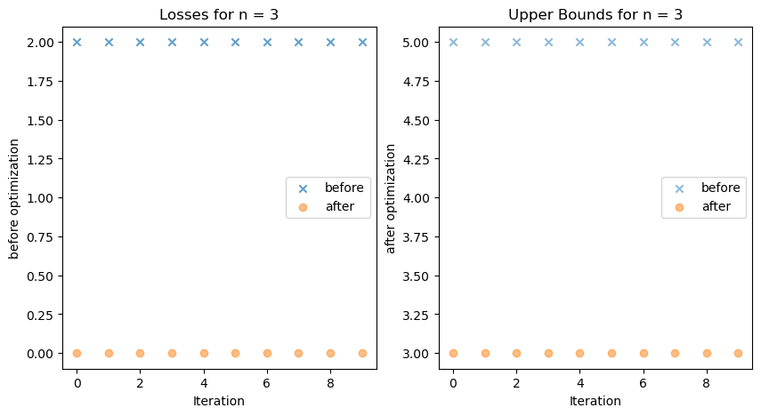
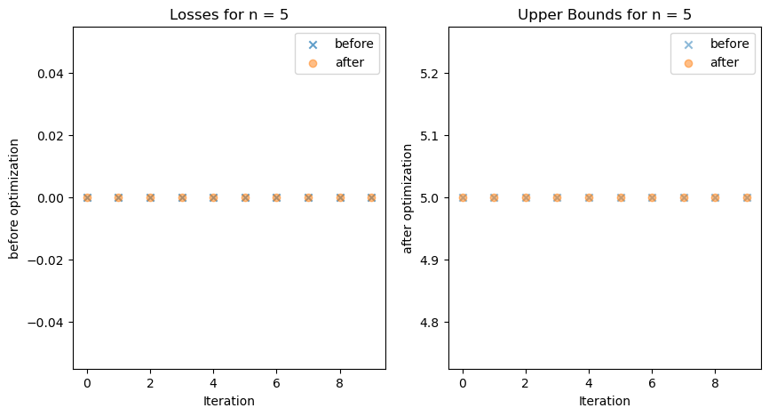
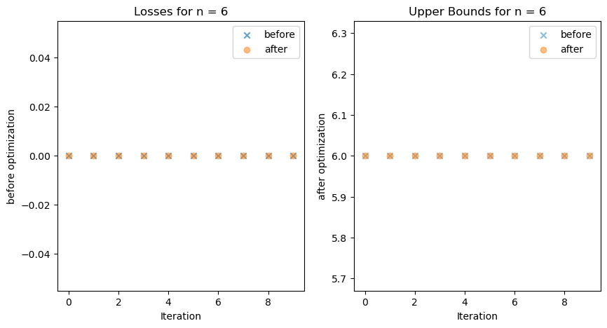
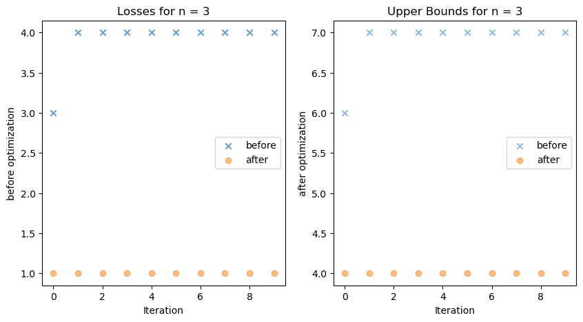
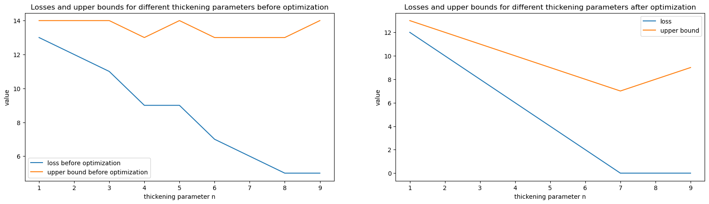
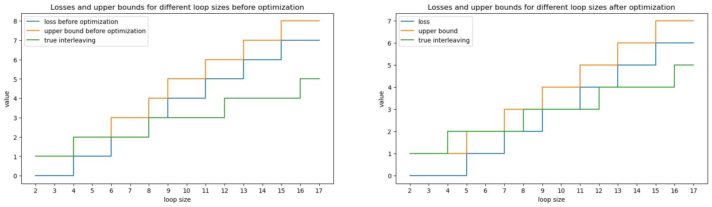
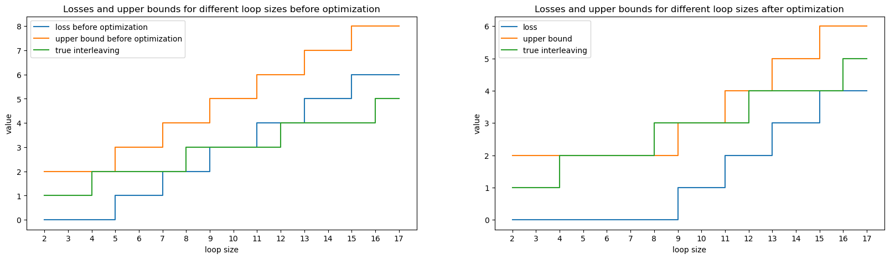
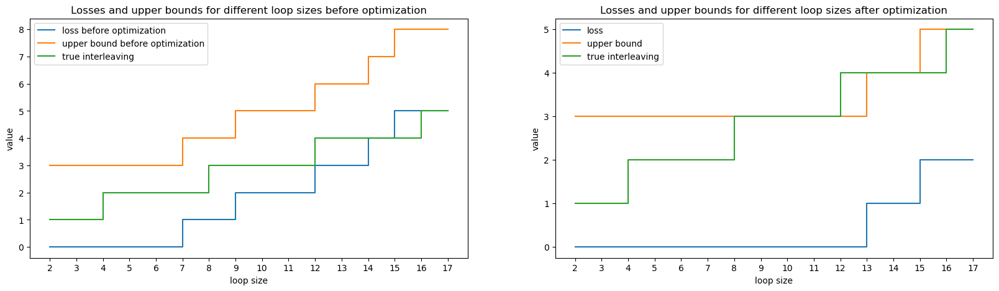

[1]:
%reload_ext autoreload
%autoreload 2
This notebook aims to find the the optimized loss function for a line mapper and a loop mapper over multiple iterations. Also the loop size of the mappers are varied to test out the optimization.
Create a loop mapper. Uses the torus function from ex_mapergraph.py file.
Arguments: - a - int - the height of the bottom most vertex at the very bottom - b - int - the height where the loop starts - c - int - the height where the loop ends - d - int - the height of the top most vertex at the very top - delta - not needed - seed - int - the seed for the random number generator
Create a line mapper. Uses the line function from ex_mapergraph.py file.
Arguments: - a - int - the height of the bottom most vertex at the very bottom - b - int - the height of the top most vertex at the very top
[31]:
import cereeberus.distance.ilp_solver_iterations as solver_iter
import matplotlib.pyplot as plt
import math
run the iterations for n = 1, 2, 3, 4, 5, 6, 7…
[ ]:
a = 0
b = 2
c = 13 # loop size is 11
d = 15
losses_dict = {}
for i in range(1, 7):
losses_dict[f"losses_{i}"] = solver_iter.run_optimization_torus_line(a, b, c, d, i, 10)
# Save to a text file
with open("lt_losses_0_2_13_15_10.txt", "w") as file:
for key, value in losses_dict.items():
file.write(f"{key}: {value}\n")
[67]:
for i in range(1, 7):
solver_iter.plot_losses_and_upper_bounds(losses_dict[f"losses_{i}"], i)






Run 1000 iterations for one n value to evaluate the stability of the loss function.
[79]:
a = 0
b = 2
c = 17 # loop size is 15
d = 20
n = 3 # thickening
loss_1_1000 = solver_iter.run_optimization_torus_line(a, b, c, d, n, 10)
# save to a text file
with open("lt_losses_0_2_17_20_1000.txt", "w") as file:
file.write(f"losses_1_1000: {loss_1_1000}\n")
[81]:
solver_iter.plot_losses_and_upper_bounds(loss_1_1000, 3)

[82]:
a = 0
b = 2
c = 30 # loop size is 28
d = 32
for i in range(1, 10):
losses_dict[f"losses_{i}"] = solver_iter.run_optimization_torus_line(a, b, c, d, i, 1)
# Save to a text file
with open("lt_losses_0_2_30_32_1.txt", "w") as file:
for key, value in losses_dict.items():
file.write(f"{key}: {value}\n")
[ ]:
# Plot the results
plt.figure(figsize=(20, 5))
plt.subplot(121)
plt.plot(range(1, 10), [losses_dict[f"losses_{i}"][0][0] for i in range(1, 10)], label="loss before optimization")
plt.plot(range(1, 10), [losses_dict[f"losses_{i}"][0][0]+i for i in range(1, 10)], label="upper bound before optimization")
plt.xlabel("thickening parameter n")
plt.ylabel("value")
plt.legend()
plt.title("Losses and upper bounds for different thickening parameters before optimization")
plt.subplot(122)
plt.plot(range(1, 10), [losses_dict[f"losses_{i}"][1][0] for i in range(1, 10)], label="loss")
plt.plot(range(1, 10), [losses_dict[f"losses_{i}"][1][0]+i for i in range(1, 10)], label="upper bound")
plt.xlabel("thickening parameter n")
plt.ylabel("value")
plt.legend()
plt.title("Losses and upper bounds for different thickening parameters after optimization")
plt.show()

[112]:
a = 0
b = 2
n =1
for i in range(4, 50):
c = i
d = i+2
losses_dict[f"losses_{i}"] = solver_iter.run_optimization_torus_line(a, b, c, d, n, 1)
# Save to a text file
with open("lt_losses_0_2_x_x+2_1.txt", "w") as file:
for key, value in losses_dict.items():
file.write(f"{key}: {value}\n")
[62]:
# Plot the results
def compute_loss_dict_diff_loopsize(largest_loop, n):
a = 0
b = 2
c = range(4, largest_loop)
losses_dict = {}
for i in c:
losses_dict[f"losses_{i}"] = solver_iter.run_optimization_torus_line(a, b, i, i+2, n, 1)
return losses_dict
def plot_fig_diff_loopsize(largest_loop, n):
losses_dict = compute_loss_dict_diff_loopsize(largest_loop, n)
plt.figure(figsize=(20, 5))
plt.subplot(121)
plt.step(range(2, largest_loop-2), [losses_dict[f"losses_{i}"][0][0] for i in range(4, largest_loop)], label="loss before optimization")
plt.step(range(2, largest_loop-2), [losses_dict[f"losses_{i}"][0][0]+n for i in range(4, largest_loop)], label="upper bound before optimization")
plt.xticks(range(2, largest_loop-2))
plt.yticks(range(int(min([losses_dict[f"losses_{i}"][0][0] for i in range(4, largest_loop)])),
int(max([losses_dict[f"losses_{i}"][0][0]+i for i in range(4, largest_loop)])) + 1))
plt.step(range(2, largest_loop-2), [math.ceil(i/4) for i in range(2, largest_loop-2)], label="true interleaving")
plt.xlabel("loop size")
plt.ylabel("value")
plt.legend()
plt.title("Losses and upper bounds for different loop sizes before optimization")
plt.subplot(122)
plt.step(range(2, largest_loop-2), [losses_dict[f"losses_{i}"][1][0] for i in range(4, largest_loop)], label="loss")
plt.step(range(2, largest_loop-2), [losses_dict[f"losses_{i}"][1][0]+n for i in range(4, largest_loop)], label="upper bound")
plt.xticks(range(2, largest_loop-2))
plt.yticks(range(int(min([losses_dict[f"losses_{i}"][1][0] for i in range(4, largest_loop)])),
int(max([losses_dict[f"losses_{i}"][1][0]+i for i in range(4, largest_loop)])) + 1))
plt.step(range(2, largest_loop-2), [math.ceil(i/4) for i in range(2,largest_loop-2)], label="true interleaving")
plt.xlabel("loop size")
plt.ylabel("value")
plt.legend()
plt.title("Losses and upper bounds for different loop sizes after optimization")
plt.show()
[63]:
plot_fig_diff_loopsize(20, 1)

[65]:
plot_fig_diff_loopsize(20,2)

[66]:
plot_fig_diff_loopsize(20,3)

It scales (almost) linearly with the loop size.
Questions:
What is the relationship between the loss function and n value?
why does the upper bound go down compared to the true interleaving in certeain situations? (something to do with the ceiling funciton)